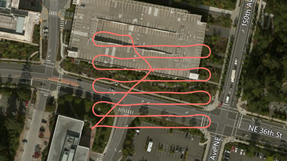

Implementing a Drone Survey script#
Moved here from https://github.com/microsoft/AirSim/wiki/Implementing-a-Drone-Survey-script
Ever wanted to capture a bunch of top-down pictures of a certain location? Well, the Python API makes this really simple. See the code available here.

Let's assume we want the following variables:
| Variable | Description |
|---|---|
| boxsize | The overall size of the square box to survey |
| stripewidth | How far apart to drive the swim lanes, this can depend on the type of camera lens, for example. |
| altitude | The height to fly the survey. |
| speed | The speed of the survey can depend on how fast your camera can snap shots. |
So with these we can compute a square path box using this code:
path = []
distance = 0
while x < self.boxsize:
distance += self.boxsize
path.append(Vector3r(x, self.boxsize, z))
x += self.stripewidth
distance += self.stripewidth
path.append(Vector3r(x, self.boxsize, z))
distance += self.boxsize
path.append(Vector3r(x, -self.boxsize, z))
x += self.stripewidth
distance += self.stripewidth
path.append(Vector3r(x, -self.boxsize, z))
distance += self.boxsize
-boxsize to +boxsize, so in this case, boxsize is half the size of the actual box we will be covering.
Once we have this list of Vector3r objects, we can fly this path very simply with the following call:
result = self.client.moveOnPath(path, self.velocity, trip_time, DrivetrainType.ForwardOnly,
YawMode(False,0), lookahead, 1)
We can compute an appropriate trip_time timeout by dividing the distance of the path and the speed we are flying.
The lookahead needed here for smooth path interpolation can be computed from the velocity using self.velocity + (self.velocity/2). The more lookahead, the smoother the turns. This is why you see in the screenshot that the ends of each swimland are smooth turns rather than a square box pattern. This can result in a smoother video from your camera also.
That's it, pretty simple, eh?
Now of course you can add a lot more intelligence to this, make it avoid known obstacles on your map, make it climb up and down a hillside so you can survey a slope, etc. Lots of fun to be had.